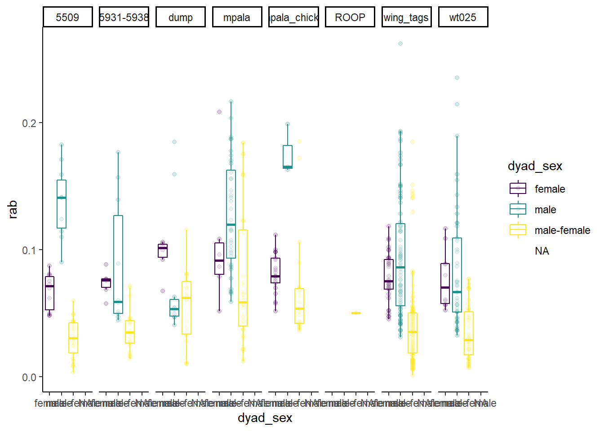

4 Data
Data compiled and used in this project
4.1 Setup
library(tidyverse)
#> -- Attaching packages ---------------------------------------------------------------------- tidyverse 1.3.0 --
#> v ggplot2 3.3.2 v purrr 0.3.4
#> v tibble 3.0.3 v dplyr 1.0.2
#> v tidyr 1.1.2 v stringr 1.4.0
#> v readr 1.3.1 v forcats 0.5.0
#> -- Conflicts ------------------------------------------------------------------------- tidyverse_conflicts() --
#> x dplyr::filter() masks stats::filter()
#> x dplyr::lag() masks stats::lag()
library(ggplot2)
library(ggthemes)
library(ggforce)
library(ggridges)
library(ggsci)
library(wesanderson)
library(ggallin)4.2 Data collection
Group information is stored in sequenced_samples_groups.csv.
sampleID_group <- read.csv("vignettes/data/sequenced_samples_groups.csv", header = TRUE, sep = ";", as.is = TRUE)
str(sampleID_group)
#> 'data.frame': 95 obs. of 4 variables:
#> $ Group_ID : chr "wing_tags" "wing_tags" "wing_tags" "wing_tags" ...
#> $ Sample.ind.code: chr "A1295" "A1296" "A1297" "A1298" ...
#> $ Real.ind.code : chr "W1295" "W1296" "W1297" "W1298" ...
#> $ Colour_.bands : chr "WT002" "WT003" "WT004" "WT021" ...
#rename Real.ind.code to ID
sampleID_group <- rename(sampleID_group, "ID" = "Sample.ind.code")
#only keep group and ID
sampleID_group <- select(sampleID_group, Group_ID, ID)
str(sampleID_group)
#> 'data.frame': 95 obs. of 2 variables:
#> $ Group_ID: chr "wing_tags" "wing_tags" "wing_tags" "wing_tags" ...
#> $ ID : chr "A1295" "A1296" "A1297" "A1298" ...There are three samples that are not listed correctly and would lead to NA’s in downstream analysis, so we manually adjust them here
#correct sample B1299 is missing
sample_info_add <- data.frame (Group_ID = c("wing_tags", "wing_tags", "5509"),
ID = c("B1299", "W1304", "W1345"))
sample_info_add
#> Group_ID ID
#> 1 wing_tags B1299
#> 2 wing_tags W1304
#> 3 5509 W1345
sampleID_group <- rbind(sampleID_group, sample_info_add)Sex information is stored in samples_sex.csv. Sex was determined in the field and confirmed at least once with a molecular sexing method in the lab. For cases with mismatch between field and molecular sex we set the sex to undetermined.
sampleID_sex <- read.csv("vignettes/data/samples_sex.csv", header = TRUE, sep = ";", as.is = TRUE)
str(sampleID_sex)
#> 'data.frame': 133 obs. of 2 variables:
#> $ ID : chr "A1295" "A1296" "A1297" "A1298" ...
#> $ sex: chr "m" "f" "m" "m" ...merge group and sex information
4.3 Data processing
4.3.1 Sequencing data
First, we load an overview of the analysed sequencing libraries. They are stored in the folder pipeline as file_list.tsv.
seqlib_overview <- read.delim("vignettes/data/pipeline/file_list.tsv", header = TRUE, as.is = TRUE)
str(seqlib_overview)
#> 'data.frame': 238 obs. of 6 variables:
#> $ file_name: chr "mpg_L16936-1_W1350_S1_R1_001.fastq.gz" "mpg_L16936-1_W1350_S1_R2_001.fastq.gz" "mpg_L16926-1_W1398_S2_R1_001.fastq.gz" "mpg_L16926-1_W1398_S2_R2_001.fastq.gz" ...
#> $ RGID : int 1 1 1 1 1 1 1 1 1 1 ...
#> $ RGLB : chr "lib1" "lib1" "lib1" "lib1" ...
#> $ RGPL : chr "ILLUMINA" "ILLUMINA" "ILLUMINA" "ILLUMINA" ...
#> $ RGPU : chr "unit1" "unit1" "unit1" "unit1" ...
#> $ RGSM : chr "RGID1_S1" "RGID1_S1" "RGID1_S2" "RGID1_S2" ...The information about the sampled individual, which we will later need to assign the relatedness estimation to specific individuals, is available in the file_name column. We will extract this information and put it in an extra ID column.
#first need to create a new column that includes the sample ID
seqlib_overview$ID <- gsub("([[:alnum:]]{3}_[[:alnum:]]{6}-[[:digit:]])_([[:alnum:]]{5,7})_([[:alnum:]]{2,3}_[[:alnum:]]{2}_[[:graph:]]{12})", "\\2", seqlib_overview$file_name)
str(seqlib_overview)
#> 'data.frame': 238 obs. of 7 variables:
#> $ file_name: chr "mpg_L16936-1_W1350_S1_R1_001.fastq.gz" "mpg_L16936-1_W1350_S1_R2_001.fastq.gz" "mpg_L16926-1_W1398_S2_R1_001.fastq.gz" "mpg_L16926-1_W1398_S2_R2_001.fastq.gz" ...
#> $ RGID : int 1 1 1 1 1 1 1 1 1 1 ...
#> $ RGLB : chr "lib1" "lib1" "lib1" "lib1" ...
#> $ RGPL : chr "ILLUMINA" "ILLUMINA" "ILLUMINA" "ILLUMINA" ...
#> $ RGPU : chr "unit1" "unit1" "unit1" "unit1" ...
#> $ RGSM : chr "RGID1_S1" "RGID1_S1" "RGID1_S2" "RGID1_S2" ...
#> $ ID : chr "W1350" "W1350" "W1398" "W1398" ...Next, we evaluate the quality of the data and the different sequencing approaches. An overview of the data as output from the Nextflow pipeline as of 29th July 2021 is stored in preprocessing_overview.tsv
data_overview <- read.delim("vignettes/data/pipeline/preprocessing_overview.tsv", as.is = TRUE)
str(data_overview)
#> 'data.frame': 119 obs. of 31 variables:
#> $ RGSM : chr "RGID1_S1" "RGID1_S2" "RGID1_S3" "RGID1_S4" ...
#> $ RGID : int 1 1 1 1 1 1 1 1 1 1 ...
#> $ RGLB : chr "lib1" "lib1" "lib1" "lib1" ...
#> $ RGPL : chr "ILLUMINA" "ILLUMINA" "ILLUMINA" "ILLUMINA" ...
#> $ RGPU : chr "unit1" "unit1" "unit1" "unit1" ...
#> $ filename_one : chr "mpg_L16936-1_W1350_S1_R1_001.fastq.gz" "mpg_L16926-1_W1398_S2_R1_001.fastq.gz" "mpg_L16927-1_W1429_S3_R1_001.fastq.gz" "mpg_L16928-1_W1502_S4_R1_001.fastq.gz" ...
#> $ filename_two : chr "mpg_L16936-1_W1350_S1_R2_001.fastq.gz" "mpg_L16926-1_W1398_S2_R2_001.fastq.gz" "mpg_L16927-1_W1429_S3_R2_001.fastq.gz" "mpg_L16928-1_W1502_S4_R2_001.fastq.gz" ...
#> $ reads_pre_trim_one : int 3844063 3360132 3034920 6695288 6040662 2842383 3879834 6087445 5686616 4107154 ...
#> $ reads_pre_trim_two : int 3844063 3360132 3034920 6695288 6040662 2842383 3879834 6087445 5686616 4107154 ...
#> $ reads_pre_trim_total : int 7688126 6720264 6069840 13390576 12081324 5684766 7759668 12174890 11373232 8214308 ...
#> $ reads_post_trim_one : int 3334957 3057420 2775271 6144973 5496263 2618095 3544978 5592586 5206646 3740830 ...
#> $ reads_post_trim_two : int 3317567 2622060 2444309 5472149 4763684 2298940 2933104 4916336 4551423 3252219 ...
#> $ reads_post_trim_total : int 6652524 5679480 5219580 11617122 10259947 4917035 6478082 10508922 9758069 6993049 ...
#> $ reads_trimmed_lost_one : int 509106 302712 259649 550315 544399 224288 334856 494859 479970 366324 ...
#> $ reads_trimmed_lost_two : int 526496 738072 590611 1223139 1276978 543443 946730 1171109 1135193 854935 ...
#> $ reads_trimmed_lost_total : int 1035602 1040784 850260 1773454 1821377 767731 1281586 1665968 1615163 1221259 ...
#> $ reads_trimmed_lost_total_percent : num 0.135 0.155 0.14 0.132 0.151 ...
#> $ reads_mapped : int 6448222 5897151 5344556 11948516 10542799 5052562 6862719 10880329 10069374 7213292 ...
#> $ reads_mapped_and_paired : int 6124942 4910684 4546908 10259622 8836944 4295176 5524338 9244878 8510126 6063336 ...
#> $ reads_unmapped : int 158628 176787 170192 251546 386867 143020 186719 234815 276382 223486 ...
#> $ reads_mapped_percent : num 0.975 0.97 0.968 0.979 0.963 ...
#> $ average_coverage : num 1.6 1.63 1.58 2.16 2.07 ...
#> $ average_coverarge_stdev : num 2.67 2.8 2.62 2.98 3.64 ...
#> $ unpaired_reads_examined_for_deduplication: int 323280 986467 797648 1688894 1705855 757386 1338381 1635451 1559248 1149956 ...
#> $ paired_reads_examined_for_deduplication : int 3094003 2475793 2291351 5174753 4449902 2167892 2782428 4657453 4288831 3054109 ...
#> $ unpaired_read_duplicated : int 66109 106320 78976 195164 185282 87774 136509 172933 169988 118239 ...
#> $ paired_read_duplicates : int 221442 119369 103005 260460 197926 115543 120104 206962 194659 133521 ...
#> $ percent_duplication : num 0.0782 0.0581 0.053 0.0595 0.0548 ...
#> $ sequenced_library_complexity : int 6090385 5720981 5222642 11474365 10330774 4870312 6664743 10519461 9774928 7042018 ...
#> $ estimated_library_complexity : int 23660823 29649178 29602264 59328308 57146455 23492191 37280729 60581428 54839066 40354282 ...
#> $ percent_library_sequenced : num 0.257 0.193 0.176 0.193 0.181 ...One sequencing library was resequenced in an additionl run but wrongly assigned to RGID 1, so we correct this
#create new column that specifies if sequencing results are from original run or from resequencing
data_overview <- data_overview %>%
mutate(original_reseq = case_when(RGID == "1" ~ "original",
RGID == "2" ~ "reseq"))#first need to create a new column that includes the sample ID
data_overview$ID <- gsub("([[:alnum:]]{3}_[[:alnum:]]{6}-[[:digit:]])_([[:alnum:]]{5,7})_([[:alnum:]]{2,3}_[[:alnum:]]{2}_[[:graph:]]{12})", "\\2", data_overview$filename_one)
str(data_overview)
#> 'data.frame': 119 obs. of 33 variables:
#> $ RGSM : chr "RGID1_S1" "RGID1_S2" "RGID1_S3" "RGID1_S4" ...
#> $ RGID : chr "2" "1" "1" "1" ...
#> $ RGLB : chr "lib1" "lib1" "lib1" "lib1" ...
#> $ RGPL : chr "ILLUMINA" "ILLUMINA" "ILLUMINA" "ILLUMINA" ...
#> $ RGPU : chr "unit1" "unit1" "unit1" "unit1" ...
#> $ filename_one : chr "mpg_L16936-1_W1350_S1_R1_001.fastq.gz" "mpg_L16926-1_W1398_S2_R1_001.fastq.gz" "mpg_L16927-1_W1429_S3_R1_001.fastq.gz" "mpg_L16928-1_W1502_S4_R1_001.fastq.gz" ...
#> $ filename_two : chr "mpg_L16936-1_W1350_S1_R2_001.fastq.gz" "mpg_L16926-1_W1398_S2_R2_001.fastq.gz" "mpg_L16927-1_W1429_S3_R2_001.fastq.gz" "mpg_L16928-1_W1502_S4_R2_001.fastq.gz" ...
#> $ reads_pre_trim_one : int 3844063 3360132 3034920 6695288 6040662 2842383 3879834 6087445 5686616 4107154 ...
#> $ reads_pre_trim_two : int 3844063 3360132 3034920 6695288 6040662 2842383 3879834 6087445 5686616 4107154 ...
#> $ reads_pre_trim_total : int 7688126 6720264 6069840 13390576 12081324 5684766 7759668 12174890 11373232 8214308 ...
#> $ reads_post_trim_one : int 3334957 3057420 2775271 6144973 5496263 2618095 3544978 5592586 5206646 3740830 ...
#> $ reads_post_trim_two : int 3317567 2622060 2444309 5472149 4763684 2298940 2933104 4916336 4551423 3252219 ...
#> $ reads_post_trim_total : int 6652524 5679480 5219580 11617122 10259947 4917035 6478082 10508922 9758069 6993049 ...
#> $ reads_trimmed_lost_one : int 509106 302712 259649 550315 544399 224288 334856 494859 479970 366324 ...
#> $ reads_trimmed_lost_two : int 526496 738072 590611 1223139 1276978 543443 946730 1171109 1135193 854935 ...
#> $ reads_trimmed_lost_total : int 1035602 1040784 850260 1773454 1821377 767731 1281586 1665968 1615163 1221259 ...
#> $ reads_trimmed_lost_total_percent : num 0.135 0.155 0.14 0.132 0.151 ...
#> $ reads_mapped : int 6448222 5897151 5344556 11948516 10542799 5052562 6862719 10880329 10069374 7213292 ...
#> $ reads_mapped_and_paired : int 6124942 4910684 4546908 10259622 8836944 4295176 5524338 9244878 8510126 6063336 ...
#> $ reads_unmapped : int 158628 176787 170192 251546 386867 143020 186719 234815 276382 223486 ...
#> $ reads_mapped_percent : num 0.975 0.97 0.968 0.979 0.963 ...
#> $ average_coverage : num 1.6 1.63 1.58 2.16 2.07 ...
#> $ average_coverarge_stdev : num 2.67 2.8 2.62 2.98 3.64 ...
#> $ unpaired_reads_examined_for_deduplication: int 323280 986467 797648 1688894 1705855 757386 1338381 1635451 1559248 1149956 ...
#> $ paired_reads_examined_for_deduplication : int 3094003 2475793 2291351 5174753 4449902 2167892 2782428 4657453 4288831 3054109 ...
#> $ unpaired_read_duplicated : int 66109 106320 78976 195164 185282 87774 136509 172933 169988 118239 ...
#> $ paired_read_duplicates : int 221442 119369 103005 260460 197926 115543 120104 206962 194659 133521 ...
#> $ percent_duplication : num 0.0782 0.0581 0.053 0.0595 0.0548 ...
#> $ sequenced_library_complexity : int 6090385 5720981 5222642 11474365 10330774 4870312 6664743 10519461 9774928 7042018 ...
#> $ estimated_library_complexity : int 23660823 29649178 29602264 59328308 57146455 23492191 37280729 60581428 54839066 40354282 ...
#> $ percent_library_sequenced : num 0.257 0.193 0.176 0.193 0.181 ...
#> $ original_reseq : chr "reseq" "original" "original" "original" ...
#> $ ID : chr "W1350" "W1398" "W1429" "W1502" ...save data overview
Calculate total and mean number of raw reads !!paired-end sequencing, so need to account for that
total_raw_reads <- sum(data_overview$reads_pre_trim_total)
total_raw_reads
#> [1] 1393934732
mean_raw_reads <- mean(data_overview$reads_pre_trim_total)
mean_raw_reads
#> [1] 11713737
sd_raw_reads <- sd(data_overview$reads_pre_trim_total)
sd_raw_reads
#> [1] 5979400Calculate total and mean number of quality filtered reads
total_filtered_reads <- sum(data_overview$reads_post_trim_total)
total_filtered_reads
#> [1] 1218247416
percent_filtered_reads <- total_filtered_reads/total_raw_reads
percent_filtered_reads
#> [1] 0.873963
mean_filtered_reads <- mean(data_overview$reads_post_trim_total)
mean_filtered_reads
#> [1] 10237373
percent_mean_filtered_reads <- mean_filtered_reads/mean_raw_reads
percent_mean_filtered_reads
#> [1] 0.873963
sd_filtered_reads <- sd(data_overview$reads_post_trim_total)
sd_filtered_reads
#> [1] 5426886
median_Trimmomatic_dropped <- median(data_overview$reads_trimmed_lost_total, na.rm = TRUE)
median_Trimmomatic_dropped
#> [1] 1310301
IQR_Trimmomatic_dropped <- IQR(data_overview$reads_trimmed_lost_total, na.rm = TRUE)
IQR_Trimmomatic_dropped
#> [1] 749127
range_Trimmomatic_dropped <- range(data_overview$reads_trimmed_lost_total, na.rm = TRUE)
range_Trimmomatic_dropped
#> [1] 323232 4158669Calculate mapped reads
median_mapped_reads <- median(data_overview$reads_mapped)
median_mapped_reads
#> [1] 9498515
IQR_mapped_reads <- IQR(data_overview$reads_mapped)
IQR_mapped_reads
#> [1] 6902176
range_mapped_reads <- range(data_overview$reads_mapped)
range_mapped_reads
#> [1] 1843218 32346499Calculate duplicates
median_duplicates <- median(data_overview$percent_duplication)
median_duplicates
#> [1] 0.056526
range_duplicates <- range(data_overview$percent_duplication)
range_duplicates
#> [1] 0.039762 0.100763Calculate final coverage
median_final_coverage <- median(data_overview$average_coverage)
median_final_coverage
#> [1] 1.91596
IQR_final_coverage <- IQR(data_overview$average_coverage)
IQR_final_coverage
#> [1] 0.601805
range_final_coverage <- range(data_overview$average_coverage)
range_final_coverage
#> [1] 1.33748 4.31431For the sequencing success, we compare the reads that passed Quality control (FastCQ and Trimmotaic) depending on original run (RGID = 1) and resequencing (RGID = 2).
theme_set(theme_bw()) #set theme to black and white
#compare reads (y-axis) between original vs. resequenced (x-axis, sorted to have original first) and color according to library prep (shotgun vs. capture)
ggplot(data_overview, aes(x = factor(RGID, level = c("1", "2")), y = reads_post_trim_total, color = original_reseq, shape = original_reseq)) +
scale_color_viridis_d(end = 0.5) +
geom_point(size = 2, alpha = 0.6, aes(group = ID), position = position_dodge(0.5)) + #make points, transparent, and group samples
geom_boxplot(alpha = 0.4, outlier.shape = NA) + #add boxplots but do not show them in legend
#geom_violin(alpha = 0.5) + #or add violin plots
geom_line(aes(group = ID), color = "grey", position = position_dodge(0.5), show.legend = FALSE) + #add line to connect samples present in both sequencing runs
#stat_summary(fun = median, geom = "point", size = 5, alpha = 0.3, position = position_dodge(0.5)) +
labs(x = "sequencing run", y = "reads after quality filtering") + #adjust axis labels
theme(legend.title = element_blank()) + #remove legend title
theme(panel.grid.major.x = element_blank()) #remove x-axis grid lines
Maybe more informative about the success of the approaches is to compare % reads that mapped.
theme_set(theme_bw()) #set theme to black and white
#compare mapped reads (y-axis) between sequencing (x-axis, sorted to have original first) and color according to sequencing run
ggplot(data_overview, aes(x = factor(RGID, level = c("1", "2")), y = reads_mapped_and_paired, color = original_reseq, shape = original_reseq)) +
scale_color_viridis_d(end = 0.5) +
geom_point(size = 2, alpha = 0.6, aes(group = ID), position = position_dodge(0.5)) + #make points, transparent, and group samples
geom_boxplot(alpha = 0.4, outlier.shape = NA) + #add boxplots but do not show them in legend
#geom_violin(alpha = 0.5) + #or add violin plots
geom_line(aes(group = ID), color = "grey", position = position_dodge(0.5), show.legend = FALSE) + #add line to connect samples present in both sequencing approaches
#stat_summary(fun = median, geom = "point", size = 5, alpha = 0.3, position = position_dodge(0.5)) +
labs(x = "sequencing run", y = "mapped reads") + #adjust axis labels
theme(legend.title = element_blank()) + #remove legend title
theme(panel.grid.major.x = element_blank()) #remove x-axis grid lines
Finally, let’s have a look at the coverage
theme_set(theme_bw()) #set theme to black and white
#relate number of reads (y-axis) to final coverage (x-axis), color according to sequencing run (original vs. resequenced) and sample type, shape according to original run or resequencing
ggplot(data_overview, aes(x = average_coverage, y = reads_post_trim_total, color = original_reseq, shape = original_reseq)) +
scale_color_viridis_d(end = 0.5) +
geom_line(aes(group = ID), color = "lightgrey", show.legend = FALSE) + #connect same samples
geom_point(alpha = 0.5, aes(size = reads_mapped_and_paired, group = ID)) + #add points with slight transparency
geom_vline(xintercept = 1, linetype = "dashed") + #include vertical line to show coverage cutoff
#scale_y_log10(breaks = scales::trans_breaks("log10", function(x) 10^x), labels = scales::trans_format("log10", scales::math_format(10^.x))) + #make y-axis logarithmic
#scale_x_log10() + #make x-axis logarithmic
#annotation_logticks() +
labs(x = "coverage", y = "reads (after quality filtering)",
size = "% reads mapped", color ="", shape = "") 
C-Curve
theme_set(theme_bw()) #set theme to black and white
#relate number of distinct reads (y-axis) to total reads (x-axis), color and shape according to original run or resequencing
ggplot(data_overview, aes(x = unpaired_reads_examined_for_deduplication, y = sequenced_library_complexity, color = original_reseq, shape = original_reseq)) +
geom_line(aes(group = ID), color = "lightgrey", show.legend = FALSE) + #connect same samples
geom_point(alpha = 0.5, aes(size = average_coverage, group = ID)) + #add points with slight transparency
theme(panel.grid.minor.x = element_blank(), panel.grid.minor.y = element_blank()) + #remove x/y-axis grid lines
labs(x = "total unpaired reads", y = "sequenced library complexity",
size = "coverage", color ="", shape = "") + #adjust axis and legend labels
scale_color_viridis_d(end = 0.5)
comparison to total surviving reads from Trimmomatic to distinct mapped reads
theme_set(theme_bw()) #set theme to black and white
#relate number of distinct reads (y-axis) to total surviving reads (x-axis), color and sample type, shape according to original run or resequencing
ggplot(data_overview, aes(x = reads_post_trim_total, y = sequenced_library_complexity, color = original_reseq, shape = original_reseq)) +
scale_color_viridis_d(end = 0.5) +
geom_point(alpha = 0.5, aes(size = average_coverage, group = ID)) + #add points with slight transparency
theme(panel.grid.minor.x = element_blank(), panel.grid.minor.y = element_blank()) + #remove x/y-axis grid lines
labs(x = "total surviving reads (Trimmomatic)", y = "sequenced library complexity",
size = "coverage", color ="", shape = "") #adjust axis and legend labels
plot coverage and st.dv.
theme_set(theme_bw()) #set theme to black and white
#plot coverage (y-axis) including st.dev for every sample (x-axis), color according to original run or resequencing
ggplot(filter(data_overview, original_reseq == "original"), aes(x = reorder(ID, average_coverage), y = average_coverage, color = original_reseq, shape = original_reseq)) +
scale_color_viridis_d(end = 0.5) +
geom_point(aes(y=average_coverage), alpha = 0.8) +
geom_point(data = filter(data_overview, original_reseq == "reseq"), aes(y=average_coverage), alpha = 0.8) +
geom_errorbar(data = filter(data_overview, original_reseq == "reseq"), aes(ymin = average_coverage - average_coverarge_stdev, ymax = average_coverage + average_coverarge_stdev), alpha = 0.8) +
geom_errorbar(aes(ymin = average_coverage - average_coverarge_stdev, ymax = average_coverage + average_coverarge_stdev), alpha = 0.8) +
geom_hline(yintercept = 1, linetype = "dashed") + #include horizontal line to show coverage cutoff at 1X
geom_hline(yintercept = median_final_coverage, linetype = "dotted") +
coord_cartesian(ylim = c(0, 10)) + #adjust y axis
scale_y_continuous(breaks = c(0, 2, 4, 6, 8, 10)) +
labs(x = "sample", y = "coverage (mean+-sd)",
color ="", shape = "") + #adjust axis and legend labels
theme(axis.text.x = element_text(angle = 50, vjust = 1, hjust = 1, size = 8)) +
scale_x_discrete(guide = guide_axis(n.dodge=2)) #avoid overlap of x-axis labels
4.3.2 Relatedness data
4.3.2.1 ngsRelate
This is an assessment of the ngsRelate results produced by the Nextflow pipleine created by Ben Hume/SeqAna. The data is saved in the folder pipeline in ngsrelate as relatedness.isec.0002.exMito.thinned.ngsrelate.w.sample.names.results. We now use the results excluding replicated samples and the Z chromosome, which are stored in pipeline/no_repeats_no_Z_relatedness_results/nextflow_output/ngsrelate.
ngsRelate_results <- read.delim("vignettes/data/pipeline/no_repeats_no_Z_relatedness_results/nextflow_output/ngsrelate/relatedness.isec.0002.exMito.thinned.ngsrelate.results", header = TRUE, as.is = TRUE)
str(ngsRelate_results)
#> 'data.frame': 4560 obs. of 35 variables:
#> $ a : int 0 0 0 0 0 0 0 0 0 0 ...
#> $ b : int 1 2 3 4 5 6 7 8 9 10 ...
#> $ ida : chr "RGID1_S83" "RGID1_S83" "RGID1_S83" "RGID1_S83" ...
#> $ idb : chr "RGID1_S82" "RGID1_S29" "RGID1_S2" "RGID2_S13" ...
#> $ nSites : int 614924 527474 430254 612597 599536 515211 460041 591284 452116 488952 ...
#> $ J9 : num 0.823 0.636 0.427 0.863 0.864 ...
#> $ J8 : num 0.0 1.4e-05 1.0e-06 0.0 1.0e-06 0.0 0.0 1.0e-06 3.0e-06 0.0 ...
#> $ J7 : num 0.0895 0.0603 0.1184 0.0536 0.0468 ...
#> $ J6 : num 0 0.208 0.412 0 0 ...
#> $ J5 : num 4e-06 0e+00 1e-05 0e+00 0e+00 0e+00 0e+00 0e+00 0e+00 0e+00 ...
#> $ J4 : num 0.05385 0 0 0.030893 0.000062 ...
#> $ J3 : num 0e+00 2e-06 0e+00 0e+00 0e+00 0e+00 0e+00 2e-06 0e+00 0e+00 ...
#> $ J2 : num 0.0336 0.0959 0.0429 0.0528 0.0888 ...
#> $ J1 : num 1.0e-06 0.0 4.3e-05 1.0e-06 0.0 0.0 0.0 1.0e-06 0.0 0.0 ...
#> $ rab : num 0.0895 0.0604 0.1185 0.0536 0.0468 ...
#> $ Fa : num 0.0875 0.096 0.0429 0.0837 0.0889 ...
#> $ Fb : num 0.0336 0.3037 0.4548 0.0528 0.0888 ...
#> $ theta : num 0.0448 0.0302 0.0593 0.0268 0.0234 ...
#> $ inbred_relatedness_1_2: num 1.0e-06 1.0e-06 4.3e-05 1.0e-06 0.0 0.0 0.0 2.0e-06 0.0 0.0 ...
#> $ inbred_relatedness_2_1: num 3.0e-06 0.0 4.8e-05 1.0e-06 0.0 0.0 0.0 1.0e-06 0.0 0.0 ...
#> $ fraternity : num 0.123 0.156 0.161 0.106 0.136 ...
#> $ identity : num 1.0e-06 0.0 4.3e-05 1.0e-06 0.0 0.0 0.0 1.0e-06 0.0 0.0 ...
#> $ zygosity : num 0.123 0.156 0.161 0.106 0.136 ...
#> $ X2of3_IDB : num 0.15 0.26 0.367 0.122 0.136 ...
#> $ F_diff_a_b : num 0.026925 -0.103875 -0.205954 0.015446 0.000031 ...
#> $ loglh : num -969430 -844356 -677157 -969593 -955122 ...
#> $ nIter : int 54 62 78 62 62 54 38 46 42 58 ...
#> $ bestoptimll : int -1 -1 -1 -1 -1 -1 -1 -1 -1 -1 ...
#> $ coverage : num 0.926 0.794 0.648 0.922 0.903 ...
#> $ X2dsfs : chr "3.136819e-01,1.279287e-01,4.005387e-02,1.011532e-01,1.812662e-01,4.215345e-02,4.391939e-02,6.001794e-02,8.982536e-02" "3.378250e-01,7.470870e-02,6.303665e-02,1.394846e-01,1.300943e-01,6.827356e-02,5.710377e-02,3.065345e-02,9.882001e-02" "3.561888e-01,5.169090e-02,6.016002e-02,1.556270e-01,1.122636e-01,8.533396e-02,5.128981e-02,1.941323e-02,1.080326e-01" "3.059626e-01,1.306980e-01,4.481334e-02,1.026846e-01,1.786007e-01,4.361379e-02,4.825899e-02,5.768462e-02,8.768329e-02" ...
#> $ R0 : num 0.463 0.923 0.993 0.521 0.581 ...
#> $ R1 : num 0.437 0.3 0.265 0.418 0.401 ...
#> $ KING : num 0.0192 -0.1922 -0.2062 -0.0109 -0.0414 ...
#> $ X2dsfs_loglike : num -1205546 -1035930 -823225 -1210883 -1188795 ...
#> $ X2dsfsf_niter : int 10 10 10 9 10 10 10 10 10 10 ...Relatedness was estimated on an average of 4.675586810^{5} sites and a mean coverage of 0.7040709. On average, relatedness is 0.0580915 with a range of 2.3810^{-4}, 0.262088.
We join together the relatedness estimates with the sample information, to know the identity of the dyads
#rename "ida" and "idb" to "RGSM_a" and "RGSM-b"
ngsRelate_results <- rename(ngsRelate_results, "RGSM_a" = "ida")
ngsRelate_results <- rename(ngsRelate_results, "RGSM_b" = "idb")
#create a new column that includes RGSM_dyad
ngsRelate_results$RGSM_dyad <- if_else(ngsRelate_results$RGSM_a < ngsRelate_results$RGSM_b, paste(ngsRelate_results$RGSM_a, ngsRelate_results$RGSM_b, sep = "-"), paste(ngsRelate_results$RGSM_b, ngsRelate_results$RGSM_a, sep = "-"))
#first include ID of individual a
ngsRelate_results_ID <- left_join(ngsRelate_results, seqlib_overview[6:7], by = c("RGSM_a" = "RGSM"))
#rename "ID" to "ID_a"
ngsRelate_results_ID <- rename(ngsRelate_results_ID, "ID_a" = "ID")
#now include ID of individual b
ngsRelate_results_ID <- left_join(ngsRelate_results_ID, seqlib_overview[6:7], by = c("RGSM_b" = "RGSM"))
#rename "ID" to "ID_b"
ngsRelate_results_ID <- rename(ngsRelate_results_ID, "ID_b" = "ID")
#create a new column that includes the dyad
ngsRelate_results_ID$dyad <- if_else(ngsRelate_results_ID$ID_a < ngsRelate_results_ID$ID_b, paste(ngsRelate_results_ID$ID_a, ngsRelate_results_ID$ID_b, sep = "-"), paste(ngsRelate_results_ID$ID_b, ngsRelate_results_ID$ID_a, sep = "-"))
#remove duplicates ##maybe not necessary anymore
ngsRelate_results_ID <- distinct(ngsRelate_results_ID)We also include the group information
#first include group of individual a
ngsRelate_results_sample_info <- left_join(ngsRelate_results_ID, sample_info, by = c("ID_a" = "ID"))
#rename "Group_ID" to "a_Group" and "sex" to "a_sex"
ngsRelate_results_sample_info <- rename(ngsRelate_results_sample_info, "a_Group" = "Group_ID")
ngsRelate_results_sample_info <- rename(ngsRelate_results_sample_info, "a_sex" = "sex")
#then include group of individual b
ngsRelate_results_sample_info <- left_join(ngsRelate_results_sample_info, sample_info, by = c("ID_b" = "ID"))
#rename "Group_ID" to "b_Group" and "sex" to "b_sex"
ngsRelate_results_sample_info <- rename(ngsRelate_results_sample_info, "b_Group" = "Group_ID")
ngsRelate_results_sample_info <- rename(ngsRelate_results_sample_info, "b_sex" = "sex")#which group IDs are there?
sort(unique(ngsRelate_results_sample_info$a_Group))
#> [1] "5509" "5512" "5931-5938" "dump" "mpala"
#> [6] "mpala_chicks" "ROOP" "RRWB" "wing_tags" "wt025"sort(unique(ngsRelate_results_sample_info$b_Group))
#> [1] "5509" "5512" "5931-5938" "dump" "mpala"
#> [6] "mpala_chicks" "ROOP" "RRWB" "wing_tags" "wt025"#create new column that specifies if individuals are from same or different groups
ngsRelate_results_sample_info <- ngsRelate_results_sample_info %>%
mutate(dyad_group = case_when(ID_a == ID_b ~ "identical",
a_Group == b_Group ~ "intragroup",
a_Group != b_Group ~ "intergroup"))
unique(ngsRelate_results_sample_info$dyad_group)
#> [1] "intragroup" "intergroup"#create new column that specifies if individuals have same or different sex
ngsRelate_results_sample_info <- ngsRelate_results_sample_info %>%
mutate(dyad_sex = case_when(ID_a == ID_b ~ "identical",
a_sex == b_sex ~ "same sex",
a_sex != b_sex ~ "male-female"))
#recode dyads for individuals with undetermined sex to NA
ngsRelate_results_sample_info$dyad_sex[ngsRelate_results_sample_info$a_sex == "u"] <- NA
ngsRelate_results_sample_info$dyad_sex[ngsRelate_results_sample_info$b_sex == "u"] <- NA
#recode same sex dyads to male or female
ngsRelate_results_sample_info$dyad_sex[ngsRelate_results_sample_info$dyad_sex == "same sex" &
ngsRelate_results_sample_info$a_sex == "f"] <- "female"
ngsRelate_results_sample_info$dyad_sex[ngsRelate_results_sample_info$dyad_sex == "same sex" &
ngsRelate_results_sample_info$a_sex == "m"] <- "male"
unique(ngsRelate_results_sample_info$dyad_sex)
#> [1] "male-female" NA "female" "male"Let’s have a closer look at the samples that were sequenced twice
#find samples that were sequenced twice
duplicates <- filter(ngsRelate_results_sample_info, ID_a == ID_b)
#average relatedness of these duplicted inidividuals
mean(duplicates$rab)
#> [1] NaN
#range
range(duplicates$rab)
#> Warning in min(x): kein nicht-fehlendes Argument für min; gebe Inf zurück
#> Warning in max(x): kein nicht-fehlendes Argument für max; gebe -Inf zurück
#> [1] Inf -InfCreate subset with at least 250k SNPs
ngsRelate_results_sample_info_250k <- filter(ngsRelate_results_sample_info, nSites >= 250000)
unique(ngsRelate_results_sample_info_250k$dyad_group)
#> [1] "intragroup" "intergroup"To get an overview of the distribution of relatedness coefficients, we plot pairwise relatedness for all dyads
theme_set(theme_classic())
#plot relatedness rab (y-axis) for every dyad (x-axis), ordered from low to high relatedness and colored according to inter- or intragroup dyad
ggplot(ngsRelate_results_sample_info_250k, aes(x = reorder(dyad, rab), y = rab, color = dyad_sex, shape = dyad_group)) +
geom_point(alpha = 0.2, aes(y = rab)) + #plot relatedness estimates as points
geom_hline(yintercept = c(0.125, 0.25, 0.5), linetype = "dashed") + #include horizontal line to show traditional kinship categories
labs( x = "Dyad", y = "Relatedness (ngsRelate)") +
ggtitle("distribution of relatedness (ngsrelate) 250k")%20distribution-1.png)
check correlation between number of SNPs and sex
theme_set(theme_classic())
#plot nSites (y-axis) and for the different categories of sex of dyad (x-axis) colored according to coverage
ggplot(ngsRelate_results_sample_info, aes(x = dyad_sex, y = nSites, color = coverage, shape = dyad_group)) +
geom_point(alpha = 0.2) +
geom_boxplot()%20dyad_sex%20and%20nSites-1.png)
Compare relatedness estimates according to group and sex
theme_set(theme_classic())
#plot relatedness rab (y-axis) for the different categories of sex of dyad (x-axis) colored according to group membership
ggplot(ngsRelate_results_sample_info_250k, aes(x = dyad_sex, y = rab, color = dyad_group, shape = dyad_group)) +
geom_point(alpha = 0.2, position = position_dodge(0.5)) +
geom_boxplot(alpha = 0.4, outlier.shape = NA)%20relatedness%20for%20group%20and%20sex-1.png)
4.3.2.2 lcmlkin
We now use the results excluding replicated samples, which are stored in pipeline/no_repeats_relatedness_results/nf_results/lcmlkin
lcmlkin_results <- read.delim("vignettes/data/pipeline/no_repeats_relatedness_results/nf_results/lcmlkin/relatedness.isec.0002.exMito.thinned.lcmlkin.results", header = TRUE, as.is = TRUE)
str(lcmlkin_results)
#> 'data.frame': 4560 obs. of 7 variables:
#> $ Ind1 : chr "RGID1_S83" "RGID1_S83" "RGID1_S83" "RGID1_S83" ...
#> $ Ind2 : chr "RGID1_S49" "RGID2_S13" "RGID1_S89" "RGID2_S11" ...
#> $ k0_hat: num 0.911 0.878 0.835 0.815 0.863 0.904 0.814 0.816 0.877 0.903 ...
#> $ k1_hat: num 0 0.002 0.004 0.003 0.002 0.003 0.005 0.003 0.002 0.003 ...
#> $ k2_hat: num 0.089 0.12 0.162 0.182 0.134 0.093 0.182 0.18 0.121 0.094 ...
#> $ pi_HAT: num 0.089 0.121 0.164 0.183 0.136 0.094 0.184 0.182 0.122 0.096 ...
#> $ nbSNP : int 617110 729018 615902 622500 713042 579737 518643 623265 704472 603659 ...We join together the relatedness estimates with the sample information, to know the identity of the dyads
#rename "ida" and "idb" to "RGSM_a" and "RGSM-b"
lcmlkin_results <- rename(lcmlkin_results, "RGSM_a" = "Ind1")
lcmlkin_results <- rename(lcmlkin_results, "RGSM_b" = "Ind2")
#create a new column that includes RGSM_dyad
lcmlkin_results$RGSM_dyad <- if_else(lcmlkin_results$RGSM_a < lcmlkin_results$RGSM_b, paste(lcmlkin_results$RGSM_a, lcmlkin_results$RGSM_b, sep = "-"), paste(lcmlkin_results$RGSM_b, lcmlkin_results$RGSM_a, sep = "-"))
#first include ID of individual a
lcmlkin_results_ID <- left_join(lcmlkin_results, seqlib_overview[6:7], by = c("RGSM_a" = "RGSM"))
#rename "ID" to "ID_a"
lcmlkin_results_ID <- rename(lcmlkin_results_ID, "ID_a" = "ID")
#now include ID of individual b
lcmlkin_results_ID <- left_join(lcmlkin_results_ID, seqlib_overview[6:7], by = c("RGSM_b" = "RGSM"))
#rename "ID" to "ID_b"
lcmlkin_results_ID <- rename(lcmlkin_results_ID, "ID_b" = "ID")
#create a new column that includes the dyad
lcmlkin_results_ID$dyad <- if_else(lcmlkin_results_ID$ID_a < lcmlkin_results_ID$ID_b, paste(lcmlkin_results_ID$ID_a, lcmlkin_results_ID$ID_b, sep = "-"), paste(lcmlkin_results_ID$ID_b, lcmlkin_results_ID$ID_a, sep = "-"))
#remove duplicates ##maybe not necessary anymore
lcmlkin_results_ID <- distinct(lcmlkin_results_ID)We also include the group information
#first include group of individual a
lcmlkin_results_sample_info <- left_join(lcmlkin_results_ID, sample_info, by = c("ID_a" = "ID"))
#rename "Group_ID" to "a_Group"
lcmlkin_results_sample_info <- rename(lcmlkin_results_sample_info, "a_Group" = "Group_ID")
lcmlkin_results_sample_info <- rename(lcmlkin_results_sample_info, "a_sex" = "sex")
#then include group of individual b
lcmlkin_results_sample_info <- left_join(lcmlkin_results_sample_info, sample_info, by = c("ID_b" = "ID"))
lcmlkin_results_sample_info <- rename(lcmlkin_results_sample_info, "b_sex" = "sex")
#rename "Group_ID" to "b_Group"
lcmlkin_results_sample_info <- rename(lcmlkin_results_sample_info, "b_Group" = "Group_ID")#create new column that specifies if individuals are from same or different groups
lcmlkin_results_sample_info <- lcmlkin_results_sample_info %>%
mutate(dyad_group = if_else(a_Group == b_Group, "intra", "inter"))
str(lcmlkin_results_sample_info)
#> 'data.frame': 4560 obs. of 16 variables:
#> $ RGSM_a : chr "RGID1_S83" "RGID1_S83" "RGID1_S83" "RGID1_S83" ...
#> $ RGSM_b : chr "RGID1_S49" "RGID2_S13" "RGID1_S89" "RGID2_S11" ...
#> $ k0_hat : num 0.911 0.878 0.835 0.815 0.863 0.904 0.814 0.816 0.877 0.903 ...
#> $ k1_hat : num 0 0.002 0.004 0.003 0.002 0.003 0.005 0.003 0.002 0.003 ...
#> $ k2_hat : num 0.089 0.12 0.162 0.182 0.134 0.093 0.182 0.18 0.121 0.094 ...
#> $ pi_HAT : num 0.089 0.121 0.164 0.183 0.136 0.094 0.184 0.182 0.122 0.096 ...
#> $ nbSNP : int 617110 729018 615902 622500 713042 579737 518643 623265 704472 603659 ...
#> $ RGSM_dyad : chr "RGID1_S49-RGID1_S83" "RGID1_S83-RGID2_S13" "RGID1_S83-RGID1_S89" "RGID1_S83-RGID2_S11" ...
#> $ ID_a : chr "WT00386" "WT00386" "WT00386" "WT00386" ...
#> $ ID_b : chr "A1307" "A1312" "W1671" "W1673" ...
#> $ dyad : chr "A1307-WT00386" "A1312-WT00386" "W1671-WT00386" "W1673-WT00386" ...
#> $ a_Group : chr "mpala_chicks" "mpala_chicks" "mpala_chicks" "mpala_chicks" ...
#> $ a_sex : chr "f" "f" "f" "f" ...
#> $ b_Group : chr "wing_tags" "wing_tags" "wt025" "wt025" ...
#> $ b_sex : chr "m" "m" "f" "f" ...
#> $ dyad_group: chr "inter" "inter" "inter" "inter" ...#create new column that specifies if individuals have same or different sex
lcmlkin_results_sample_info <- lcmlkin_results_sample_info %>%
mutate(dyad_sex = case_when(ID_a == ID_b ~ "identical",
a_sex == b_sex ~ "same sex",
a_sex != b_sex ~ "male-female"))
#recode dyads for individuals with undetermined sex to NA
lcmlkin_results_sample_info$dyad_sex[lcmlkin_results_sample_info$a_sex == "u"] <- NA
lcmlkin_results_sample_info$dyad_sex[lcmlkin_results_sample_info$b_sex == "u"] <- NA
#recode same sex dyads to male or female
lcmlkin_results_sample_info$dyad_sex[lcmlkin_results_sample_info$dyad_sex == "same sex" &
lcmlkin_results_sample_info$a_sex == "f"] <- "female"
lcmlkin_results_sample_info$dyad_sex[lcmlkin_results_sample_info$dyad_sex == "same sex" &
lcmlkin_results_sample_info$a_sex == "m"] <- "male"
unique(lcmlkin_results_sample_info$dyad_sex)
#> [1] "male-female" "female" NA "male"Let’s have a closer look at the samples that were sequenced twice
#find samples that were sequenced twice
duplicates_lcmlkin <- filter(lcmlkin_results_sample_info, ID_a == ID_b)
#average relatedness of these duplicted inidividuals
mean(duplicates_lcmlkin$pi_HAT)
#> [1] NaN
#range
range(duplicates_lcmlkin$pi_HAT)
#> Warning in min(x): kein nicht-fehlendes Argument für min; gebe Inf zurück
#> Warning in max(x): kein nicht-fehlendes Argument für max; gebe -Inf zurück
#> [1] Inf -InfCreate subset with at least 300k SNPs
theme_set(theme_classic())
#plot relatedness pi_HAT (y-axis) for every dyad (x-axis), ordered from low to high relatedness and colored according to inter- or intragroup dyad
ggplot(lcmlkin_results_sample_info_300k, aes(x = reorder(dyad, pi_HAT), y = pi_HAT, color = dyad_sex, shape = dyad_group)) +
geom_point(alpha = 0.1, aes(y = pi_HAT)) + #plot relatedness estimates as points
geom_hline(yintercept = c(0.125, 0.25, 0.5), linetype = "dashed") + #include horizontal line to show traditional kinship categories
labs( x = "Dyad", y = "Relatedness (lcmlkin)") +
ggtitle("distribution of relatedness (lcmlkin) 300k SNPs")%20distribution-1.png)
theme_set(theme_classic())
#plot relatedness pi_HAT (y-axis) and corresponding k0 (x-axis) colored according to nbSNP
ggplot(lcmlkin_results_sample_info, aes(x = k0_hat, y = pi_HAT, color = nbSNP, shape = dyad_group)) +
geom_point(alpha = 0.2) +
ggtitle("lcmlkin k0 vs phi")%20distribution%20and%20k0-1.png)
check correlation between number of SNPs and sex
theme_set(theme_classic())
#plot nbSNPs (y-axis) and for the different categories of sex of dyad (x-axis) colored according to dyad_group
ggplot(lcmlkin_results_sample_info, aes(x = dyad_sex, y = nbSNP, color = dyad_group, shape = dyad_group)) +
geom_point(alpha = 0.2) +
geom_boxplot()%20dyad_sex%20and%20nbSNP-1.png)
ggtitle("nbSNP vs sex of dyad")
#> $title
#> [1] "nbSNP vs sex of dyad"
#>
#> attr(,"class")
#> [1] "labels"theme_set(theme_classic())
#plot relatedness pi_HAT (y-axis) for the different categories of sex of dyad (x-axis) colored according to group membership
ggplot(lcmlkin_results_sample_info_300k, aes(x = dyad_group, y = pi_HAT, color = dyad_sex)) +
geom_point(alpha = 0.2) +
geom_boxplot()
4.3.2.3 READ
This is an assessment of the READ results produced by the Nextflow pipleine created by Ben Hume/SeqAna. The data is saved in the folder pipeline in read as meansP0_AncientDNA_normalized. The preprocessed data (categorizes unrelated, first- and second-order related) is sotred as READ_results.
READ_rawresults <- read.delim("vignettes/data/pipeline/no_repeats_relatedness_results/nf_results/read/meansP0_AncientDNA_normalized", header = TRUE, sep = " ", as.is = TRUE)
str(READ_rawresults)
#> 'data.frame': 4560 obs. of 5 variables:
#> $ PairIndividuals : chr "RGID1_S10RGID1_S11" "RGID1_S10RGID1_S26" "RGID1_S10RGID1_S36" "RGID1_S10RGID1_S39" ...
#> $ Normalized2AlleleDifference: num 0.954 0.968 0.931 0.972 0.985 ...
#> $ StandardError : num 0.00477 0.00498 0.00534 0.00472 0.00489 ...
#> $ NonNormalizedP0 : num 0.341 0.346 0.333 0.347 0.352 ...
#> $ NonNormalizedStandardError : num 0.0017 0.00178 0.00191 0.00169 0.00175 ...READ_kinresults <- read.delim("vignettes/data/pipeline/no_repeats_relatedness_results/nf_results/read/READ_results", header = TRUE, sep = "\t", as.is = TRUE)
str(READ_kinresults)
#> 'data.frame': 4560 obs. of 4 variables:
#> $ PairIndividuals: chr "RGID1_S10RGID1_S11" "RGID1_S10RGID1_S26" "RGID1_S10RGID1_S36" "RGID1_S10RGID1_S39" ...
#> $ Relationship : chr "Unrelated" "Unrelated" "Unrelated" "Unrelated" ...
#> $ Z_upper : num NA NA NA NA NA NA NA NA NA NA ...
#> $ Z_lower : num -9.91 -12.35 -4.68 -13.99 -16.15 ...Merge these two result files
READ_results <- left_join(READ_rawresults, READ_kinresults, by = "PairIndividuals")
str(READ_results)
#> 'data.frame': 4560 obs. of 8 variables:
#> $ PairIndividuals : chr "RGID1_S10RGID1_S11" "RGID1_S10RGID1_S26" "RGID1_S10RGID1_S36" "RGID1_S10RGID1_S39" ...
#> $ Normalized2AlleleDifference: num 0.954 0.968 0.931 0.972 0.985 ...
#> $ StandardError : num 0.00477 0.00498 0.00534 0.00472 0.00489 ...
#> $ NonNormalizedP0 : num 0.341 0.346 0.333 0.347 0.352 ...
#> $ NonNormalizedStandardError : num 0.0017 0.00178 0.00191 0.00169 0.00175 ...
#> $ Relationship : chr "Unrelated" "Unrelated" "Unrelated" "Unrelated" ...
#> $ Z_upper : num NA NA NA NA NA NA NA NA NA NA ...
#> $ Z_lower : num -9.91 -12.35 -4.68 -13.99 -16.15 ...Now we need to split the PairIndividuals into individual 1 and 2, identify these individuals and then create the dyads corresponding to the previous results.
#Need to split PairIndividuals into 2 new columns
READ_results$RGSM_a <- gsub("(RGID[[:alnum:]]{1}_S[[:alnum:]]{1,2})(RGID[[:alnum:]]{1}_S[[:alnum:]]{1,2})", "\\1", READ_results$PairIndividuals)
READ_results$RGSM_b <- gsub("(RGID[[:alnum:]]{1}_S[[:alnum:]]{1,2})(RGID[[:alnum:]]{1}_S[[:alnum:]]{1,2})", "\\2", READ_results$PairIndividuals)
#create a new column that includes RGSM_dyad
READ_results$RGSM_dyad <- if_else(READ_results$RGSM_a < READ_results$RGSM_b, paste(READ_results$RGSM_a, READ_results$RGSM_b, sep = "-"), paste(READ_results$RGSM_b, READ_results$RGSM_a, sep = "-"))
str(READ_results)
#> 'data.frame': 4560 obs. of 11 variables:
#> $ PairIndividuals : chr "RGID1_S10RGID1_S11" "RGID1_S10RGID1_S26" "RGID1_S10RGID1_S36" "RGID1_S10RGID1_S39" ...
#> $ Normalized2AlleleDifference: num 0.954 0.968 0.931 0.972 0.985 ...
#> $ StandardError : num 0.00477 0.00498 0.00534 0.00472 0.00489 ...
#> $ NonNormalizedP0 : num 0.341 0.346 0.333 0.347 0.352 ...
#> $ NonNormalizedStandardError : num 0.0017 0.00178 0.00191 0.00169 0.00175 ...
#> $ Relationship : chr "Unrelated" "Unrelated" "Unrelated" "Unrelated" ...
#> $ Z_upper : num NA NA NA NA NA NA NA NA NA NA ...
#> $ Z_lower : num -9.91 -12.35 -4.68 -13.99 -16.15 ...
#> $ RGSM_a : chr "RGID1_S10" "RGID1_S10" "RGID1_S10" "RGID1_S10" ...
#> $ RGSM_b : chr "RGID1_S11" "RGID1_S26" "RGID1_S36" "RGID1_S39" ...
#> $ RGSM_dyad : chr "RGID1_S10-RGID1_S11" "RGID1_S10-RGID1_S26" "RGID1_S10-RGID1_S36" "RGID1_S10-RGID1_S39" ...We join together the relatedness estimates with the sample information, to know the identity of the dyads
#first include ID of individual a
READ_results_ID <- left_join(READ_results, seqlib_overview[6:7], by = c("RGSM_a" = "RGSM"))
#rename "ID" to "ID_a"
READ_results_ID <- rename(READ_results_ID, "ID_a" = "ID")
#now include ID of individual b
READ_results_ID <- left_join(READ_results_ID, seqlib_overview[6:7], by = c("RGSM_b" = "RGSM"))
#rename "ID" to "ID_b"
READ_results_ID <- rename(READ_results_ID, "ID_b" = "ID")
#create a new column that includes the dyad
READ_results_ID$dyad <- if_else(READ_results_ID$ID_a < READ_results_ID$ID_b, paste(READ_results_ID$ID_a, READ_results_ID$ID_b, sep = "-"), paste(READ_results_ID$ID_b, READ_results_ID$ID_a, sep = "-"))
#remove duplicates ##maybe not necessary anymore
READ_results_ID <- distinct(READ_results_ID)Let’s have a closer look at the samples that were sequenced twice
#find samples that were sequenced twice
duplicates <- filter(READ_results_ID, ID_a == ID_b)
#average relatedness of these duplicted inidividuals
mean(duplicates$NonNormalizedP0)
#> [1] NaN
#range
range(duplicates$NonNormalizedP0)
#> Warning in min(x): kein nicht-fehlendes Argument für min; gebe Inf zurück
#> Warning in max(x): kein nicht-fehlendes Argument für max; gebe -Inf zurück
#> [1] Inf -InfWe also include the group information
#first include group of individual a
READ_results_sample_info <- left_join(READ_results_ID, sample_info, by = c("ID_a" = "ID"))
#rename "Group_ID" to "a_Group"
READ_results_sample_info <- rename(READ_results_sample_info, "a_Group" = "Group_ID")
READ_results_sample_info <- rename(READ_results_sample_info, "a_sex" = "sex")
#then include group of individual b
READ_results_sample_info <- left_join(READ_results_sample_info, sample_info, by = c("ID_b" = "ID"))
READ_results_sample_info <- rename(READ_results_sample_info, "b_sex" = "sex")
#rename "Group_ID" to "b_Group"
READ_results_sample_info <- rename(READ_results_sample_info, "b_Group" = "Group_ID")#create new column that specifies if individuals are from same or different groups
READ_results_sample_info <- READ_results_sample_info %>%
mutate(dyad_group = case_when(ID_a == ID_b ~ "identical",
a_Group == b_Group ~ "intragroup",
a_Group != b_Group ~ "intergroup"))
unique(READ_results_sample_info$dyad_group)
#> [1] "intergroup" "intragroup"#create new column that specifies if individuals have same or different sex
READ_results_sample_info <- READ_results_sample_info %>%
mutate(dyad_sex = case_when(ID_a == ID_b ~ "identical",
a_sex == b_sex ~ "same sex",
a_sex != b_sex ~ "male-female"))
#recode dyads for individuals with undetermined sex to NA
READ_results_sample_info$dyad_sex[READ_results_sample_info$a_sex == "u"] <- NA
READ_results_sample_info$dyad_sex[READ_results_sample_info$b_sex == "u"] <- NA
#recode same sex dyads to male or female
READ_results_sample_info$dyad_sex[READ_results_sample_info$dyad_sex == "same sex" &
READ_results_sample_info$a_sex == "f"] <- "female"
READ_results_sample_info$dyad_sex[READ_results_sample_info$dyad_sex == "same sex" &
READ_results_sample_info$a_sex == "m"] <- "male"
unique(READ_results_sample_info$dyad_sex)
#> [1] NA "male-female" "male" "female"
theme_set(theme_classic())
#plot relatedness P0 (y-axis) for every dyad (x-axis), ordered from low to high relatedness and colored according to inter- or intragroup dyad
ggplot(READ_results_sample_info, aes(x = reorder(PairIndividuals, NonNormalizedP0), y = NonNormalizedP0, color = dyad_sex)) +
geom_point(alpha = 0.1, aes(y = NonNormalizedP0)) + #plot relatedness estimates as points
labs( x = "Dyad", y = "Relatedness (READ)") %20distribution-1.png)
theme_set(theme_classic())
#plot relatedness pi_HAT (y-axis) for the different categories of sex of dyad (x-axis) colored according to group membership
ggplot(READ_results_sample_info, aes(x = dyad_sex, y = NonNormalizedP0, color = dyad_group)) +
geom_point(alpha = 0.2) +
geom_boxplot()%20relatedness%20for%20group%20and%20sex-1.png)
4.3.2.4 Combined relatedness results
merge ngsrelate and lcmlkin
relate_results <- full_join(ngsRelate_results_sample_info, lcmlkin_results_sample_info, by = "RGSM_dyad")
relate_results <- full_join(relate_results, READ_results_sample_info, by = "RGSM_dyad")plot
theme_set(theme_classic())
#plot relatedness pi_HAT and rab (y-axis) for every dyad (x-axis), ordered from low to high relatedness and colored according to inter- or intragroup dyad
ggplot(filter(relate_results, coverage > 0.85), aes(x = reorder(dyad, pi_HAT), color = dyad_sex)) +
scale_colour_viridis_d() +
geom_point(alpha = 0.5, aes(y = pi_HAT), shape = 15) + #plot lcmlkin relatedness estimates as points
geom_point(alpha = 0.5, aes(y = 0.7-NonNormalizedP0), shape = 16) + #plot READ estimate
geom_point(alpha = 0.5, aes(y = rab), shape = 17) + # plot ngsRelate estimates
scale_y_continuous(
name = "relatedness (lcmlkin)", #features of first axis
sec.axis = sec_axis(~., name = "P0") #features of second axis
) +
ggtitle("Comparison of relatedness estimators (>0.85X)")
#> Warning: Removed 28 rows containing missing values (geom_point).
#> Warning: Removed 28 rows containing missing values (geom_point).
#> Warning: Removed 28 rows containing missing values (geom_point).
Compare correlation among the three estimators
ggplot(relate_results, aes(x = rab, y = pi_HAT, color = dyad_sex, size = nSites, shape = dyad_group.x)) +
scale_colour_viridis_d() +
geom_point(alpha = 0.2)
#> Warning: Removed 374 rows containing missing values (geom_point).
ggplot(relate_results, aes(x = rab, y = NonNormalizedP0, color = dyad_sex, size = nSites, shape = dyad_group.x)) +
scale_colour_viridis_d() +
geom_point(alpha = 0.2)
#> Warning: Removed 374 rows containing missing values (geom_point).
ggplot(relate_results, aes(x = pi_HAT, y = NonNormalizedP0, color = dyad_sex, size = nSites, shape = dyad_group.x)) +
scale_colour_viridis_d() +
geom_point(alpha = 0.2)
#> Warning: Removed 374 rows containing missing values (geom_point).
Have a closer look at the groups
ggplot(filter(relate_results, dyad_group == "intragroup"), aes(x = dyad_sex, y = rab, color = dyad_sex)) +
scale_color_viridis_d() +
geom_point(alpha = 0.2, position = position_dodge(0.5)) +
geom_boxplot(alpha = 0.4, outlier.shape = NA) +
facet_grid(.~a_Group)
#> Warning: Removed 34 rows containing missing values (geom_point).
For comparison of relatedness estimators check Yaka et al. 2021 Curr Biol.